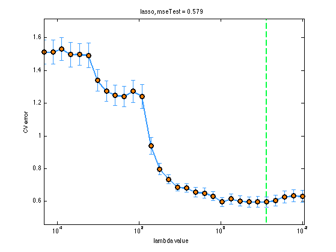
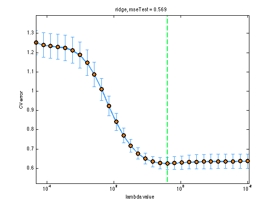
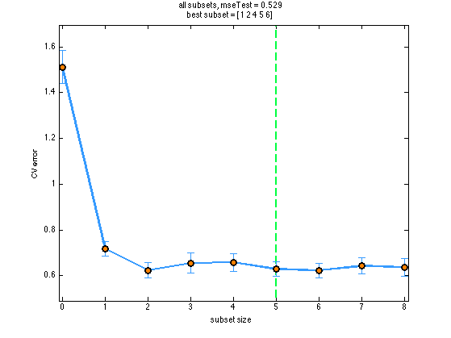

Compare L1, L2, allSubsets, and OLS linear regression on the prostate data set
Approximately reproduces table 3.3 and fig 3.7 on p63 of "Elements of statistical learning" 2nd edn (The OLS results should be identical - the fact that they are not suggests something strange is going on - most likely to do with the offset term, which should be unregularized.)
Contents
% This file is from pmtk3.googlecode.com function prostateComparison()
setSeed(0); saveLatex = false; data = loadData('prostate'); [Xtrain, ytrain] = shuffleRows(data.Xtrain, data.ytrain); % the data has been sorted which messes up CV Xtest = data.Xtest; ytest = data.ytest; nfolds = 10;
maxLambda = log10(lambdaMaxLasso(Xtrain, ytrain)); lambdaRange = logspace(-2, maxLambda, 30); loss = @(yhat, ytest) mean((yhat - ytest).^2); fit = @(regType)fitCv(lambdaRange,... @(X, y, l)linregFit(X, y, 'lambda', l, 'regType', regType),... @linregPredict, loss, Xtrain, ytrain, nfolds, 'useSErule', false, 'doPlot', true); %fit = @(regType)linregFit(Xtrain, ytrain,'lambda',... % lambdaRange, 'regType', regType, 'plotCv', true, 'nfolds', nfolds); figureNames = {'prostateLassoCV', 'prostateRidgeCV'}; titlePrefixes = {'lasso', 'ridge'}; regTypes = {'L1', 'L2'}; for i=1:numel(regTypes) [model, lambdaStar, mu, se] = fit(regTypes{i}); set(gca, 'xdir', 'reverse'); set(gca, 'xscale', 'log'); xlabel('lambda value'); yhat = linregPredict(model, Xtest); mse(i) = loss(yhat, ytest); title(sprintf('%s, mseTest = %5.3f', titlePrefixes{i}, mse(i))); printPmtkFigure(figureNames{i}); weights(:, i) = colvec(model.w); end 
All subsets
function model = fitFn(X, y, ndx) [N,D] = size(X); include = ndx; exclude = setdiff(1:D, include); X(:, exclude) = 0; lambda = eps; % needed to avoid numerical issues caused by 0 entries in X model = linregFit(X, y, 'lambda', lambda); end
d = size(data.Xtrain, 2); ss = powerset(1:d); % 256 models [modelFull, ssStarFull] = ... fitCv(ss, @fitFn, @linregPredict, loss, Xtrain, ytrain, nfolds);
for plotting purposes, look at fewer subsets
ssSmall = {[], 1, 1:2, 1:3, 1:4, 1:5, 1:6, 1:7, 1:8};
[model, ssStar, mu, se] = ...
fitCv(ssSmall, @fitFn, @linregPredict, loss, Xtrain, ytrain, nfolds);
ssStarNdx = cellfind(ssSmall, ssStar) - 1;
useLogScale = false;
figure;
plotCVcurve(0:8, mu, se, numel(ssStarFull), useLogScale); % plot w.r.t to subset sizes
xlabel('subset size');
yhat = linregPredict(modelFull, data.Xtest);
mse(3) = loss(yhat, data.ytest);
t = { sprintf('%s, mseTest = %5.3f', 'all subsets', mse(3));
['best subset = ', mat2str(ssStarFull)]
};
title(t);
printPmtkFigure('prostateSubsetsCV');
weights(:, 3) = colvec(modelFull.w);
 OLS
model = linregFit(data.Xtrain, data.ytrain, 'lambda', 0);
weights(:, 4) = colvec(model.w);
yhat = linregPredict(model, data.Xtest);
mse(4) = loss(yhat, data.ytest);
fprintf('| OLS | SS | L2 | L1 |\n'); fprintf('weights: \n'); display(roundto(weights(:, end:-1:1), 0.001)); fprintf('mse: \n'); display(roundto(mse(end:-1:1), 0.001));
| OLS | SS | L2 | L1 |
weights:
ans =
0.4290 -0.4060 0.7890 0.1460
0.5770 0.5570 0.5710 0.5750
0.6140 0.5290 0.5220 0.6310
-0.0190 0 -0.0170 -0.0180
0.1450 0.1350 0.1490 0.1410
0.7370 0.7970 0.5330 0.7190
-0.2060 -0.0960 -0.1530 -0.1940
-0.0300 0 -0.0440 0.0020
0.0090 0 0.0100 0.0090
mse:
ans =
0.5860 0.5290 0.5690 0.5790
if saveLatex weights = weights(:, end:-1:1); mse = mse(end:-1:1); headers = {'Term', 'LS', 'Best Subset', 'Ridge', 'Lasso'}; terms = [{'Intercept'}, data.names(1:8), {'Test Error'}]'; table = [cell(10, 1), num2cell([weights; rowvec(mse)])]; latextable(table, 'Horiz', headers, 'Vert', terms, 'format', '%.3f', 'Hline', [1, 10]); end
end